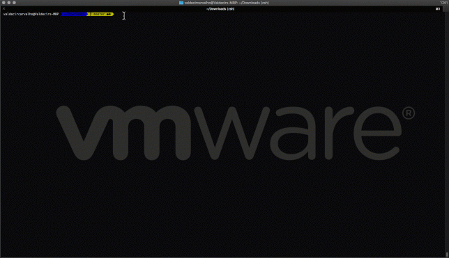

Cloud Nuke - Uma maneira simples e rápida de zerar seu ambiente AWS
AWS Blog Free Stuff ToolsCompartilhe esse post nas redes sociais...
Olá Homelabers!
Como eu ando brincando e estudando bastante sobre Terraform (tem post sobre isso vindo ai) tenho criado muitos recursos na AWS e outro dia por descuido deixei algumas instâncias rodando lá de bobeira. E claro, só percebi quando chegou a fatura - sorte que eram instâncias pequenas e o rombo não foi muito alto.
Fuçando na internet, encontrei um artigo falando sobre um programinha criado pelo Toni Solarin-Sodara (@tonerdo) da Gruntwork (@gruntwork_io) chamado Cloud Nuke.
O que o Cloud-Nuke faz é basicamente jogar uma BOMBA no seu ambiente e deleta TUDO o que você tem provisionado na AWS.
AVISO: ESTA FERRAMENTA É ALTAMENTE DESTRUTIVA, TODOS OS RECURSOS EXISTENTES SERÃO APAGADOS. SEUS EFEITOS SÃO IRREVERSÍVEIS E NUNCA DEVEM SER UTILIZADOS EM UM AMBIENTE DE PRODUÇÃO!!!
Mas então quando eu vou usar o Cloud-Nuke?
Justamente para aqueles casos onde você tem um ambiente de testes na AWS e fica criando e excluindo recursos, o Cloud-Nuke vai te ajudar a limpar todos os recursos e não deixar nada para trás ligado.
Instalação:
Instalar o Cloud-Nuke é muito simples:
* Baixe o último binário para o seu sistema operacional no repositório.
* Mova o binário para uma pasta no seu PATH. Ex. : $ _mv cloud-nuke_darwin_amd64 / usr / local / bin / cloud-nuke_.
* Adicione permissões de execução ao binário. Ex.: $ _chmod u + x / usr / local / bin / cloud-nuke_.
* Teste a instalação executando o comando: $ _cloud-nuke --help_.
Como usar:
Para usar o Cloud-Nuke, primeiramente você precisa configurar suas credenciais na AWS utilizando o AWS CLI assim.
Depois basta usar os comandos abaixo:
* _$ cloud-nuke aws_ - esse comando vai iniciar o processo de zerar TODO o seu ambiente AWS. E não tem volta!!!
* _$ cloud-nuke aws --exclude-region ap-south-1 --exclude-region ap-south-2 _- esse comando vai excluir tudo o que existir nas regiões ap-south-1 e ap-south-2
* _$ cloud-nuke aws --older-than 24h_ - esse comando vai excluir tudo o que foi criado antes de um certo período, no caso do exemplo, tudo o que for mais antigo do que 24 horas será eliminado. Você pode ver o formato utilizado no comando [aqui](https://golang.org/pkg/time/#ParseDuration)
Na prática:
Nesse exemplo, eu tinha 5 instâncias EC2 rodando na AWS e utilizei o Cloud-Nuke para DETONAR com tudo.

INFO[2019-04-16T00:24:13-03:00] Terminating 5 resources in batches
INFO[2019-04-16T00:24:13-03:00] Terminating all EC2 instances in region us-east-1
INFO[2019-04-16T00:24:44-03:00] Terminated EC2 Instance: i-05d9c82d58a4768e3
INFO[2019-04-16T00:24:44-03:00] Terminated EC2 Instance: i-0e28614621a19d79a
INFO[2019-04-16T00:24:44-03:00] Terminated EC2 Instance: i-014f6cedb2fc6a61f
INFO[2019-04-16T00:24:44-03:00] Terminated EC2 Instance: i-0a7fe66e11b6069f9
INFO[2019-04-16T00:24:44-03:00] Terminated EC2 Instance: i-010bec6a821d6eb95
INFO[2019-04-16T00:24:44-03:00] [OK] 5 instance(s) terminated in us-east-1
INFO[2019-04-16T00:24:44-03:00] Terminating 5 resources in batches
INFO[2019-04-16T00:24:44-03:00] Deleting all EBS volumes in region us-east-1
INFO[2019-04-16T00:24:44-03:00] EBS volume vol-0016ecaf21901aaa4 has already been deleted
INFO[2019-04-16T00:24:45-03:00] EBS volume vol-08ee9cb1cca7549a8 has already been deleted
INFO[2019-04-16T00:24:46-03:00] EBS volume vol-03fa7173192df32e9 has already been deleted
INFO[2019-04-16T00:24:46-03:00] EBS volume vol-07ab7c8dc56ede046 has already been deleted
INFO[2019-04-16T00:24:47-03:00] EBS volume vol-0e54bf2aaff25275e has already been deleted
INFO[2019-04-16T00:24:47-03:00] [OK] 0 EBS volumes(s) terminated in us-east-1
INFO[2019-04-16T00:24:47-03:00] Terminating 0 resources in batches
INFO[2019-04-16T00:24:47-03:00] Terminating 0 resources in batches
Para finalizar, o Cloud-Nuke é uma excelente ferramenta, mas deve ser utilizada com MUITO CUIDADO, mas que deve estar no seu cinto de utilidades para casos em que você precisa rapidamente destruir um ambiente na AWS.
Deixe ai nos comentários, se você já usou o Cloud-Nuke ou se você acha que será uma ferramenta útil para você.
Compartilhe esse post nas redes sociais...Valdecir Carvalho
Nerd e pai orgulhoso da Mariana e João. Profissional Sênior de TI com foco em arquitetura de infraestrutura e cloud computing. Blogueiro, podcaster, palestrante, amante de comunidades técnicas, fotógrafo aposentado e adora jogos antigos.
#vExpert · #VMUGLeader · #VUGBrasil · #vBronwBagBrasil · #VeeamVanguard